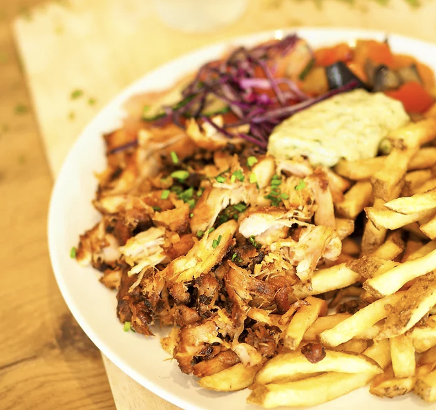
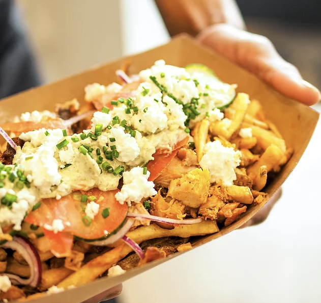
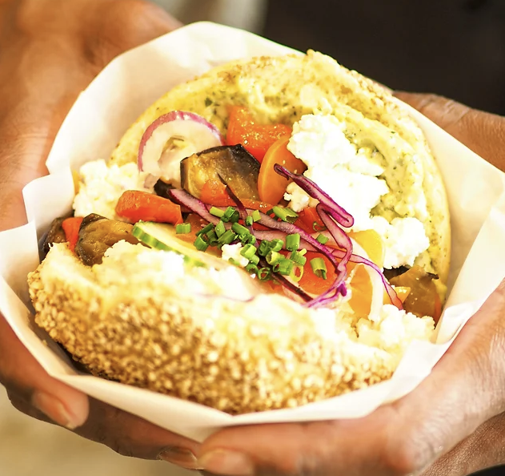

Une histoire de famille
BiBi, né dans une famille d’amateurs de Kebab parce que c’était la hess, à grandit dans les fourneaux et pas ceux en Allemagne mais à Villefranche, plus précisement dans la rue au fond à droite du rond point de La Poste.
La Recette de BiBi
Après un an de tests et réflexions culinaires, nous vous présentons la recette du chef BiBi !
UNE BROCHE VERTICALE CONFITE DE POULET FRANCAIS
marinée 24 heures et montée main chaque jour
DES LEGUMES FRAIS
marinés maison
UNE SAUCE GOURMANDE
parmi nos quatres recettes au secret bien gardé
DES HERBES FRAICHES ET DU CITRON PRESSE
LE TOUT DANS UN PAIN DANS TA GUEULE
en direct ou en crochet
LES FRITES MAISONS PREPARATION SECRETE !
Des pommes de terre brossées chaque matin, cuite avec peau en double cuisson, accompagnées de mayonnaise et ketchup maison.

Au fil des années nous avons décliné notre kebab :

En Assiette !

En Poutine !

Version Végé !